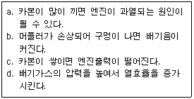
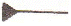
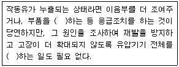

지게차운전기능사 (2010-07-11 기출문제)
1. 디젤기관에서 노킹을 일으키는 원인으로 맞는 것은?
- 흡입공기의 온도가 높을 때
- 착화지연기간이 짧을 때
- 연료에 공기가 혼입되었을 때
- 연소실에 누적된 연료가 많이 일시에 연소할 때
(정답률: 53%)

2. 기관과열의 직접적인 원인이 아닌 것은?
- 팬벨트의 느슨함
- 라디에이터의 코어 막힘
- 냉각수 부족
- 타이밍 체인(timing chain)의 헐거움
(정답률: 73%)
3. 디젤기관에서 감압장치의 기능으로 가장 적절한 것은?
- 크랭크축을 느리게 회전시킬 수 있다.
- 타이밍 기어를 원활하게 회전시킬 수 있다.
- 캠축을 원활히 회전시킬 수 있는 장치이다.
- 밸브를 열어주어 가볍게 회전시킨다.
(정답률: 46%)
4. 다음 중 기관정비 작업 시 엔진블록의 찌든 기름때를 깨끗이 세척하고자 할 때 가장 좋은 용해액은?
- 냉각수
- 절삭유
- 솔벤트
- 엔진오일
(정답률: 65%)
5. 기관 방열기에 연결된 보조탱크의 역할을 설명한 것으로 가장 적합하지 않은 것은?
- 냉각수의 체적팽창을 흡수한다.
- 장기간 냉각수 보충이 필요 없다.
- 오버플로(overflow)되어도 증기만 방출된다.
- 냉각수 온도를 적절하게 조절한다.
(정답률: 35%)
6. 냉각장치에서 밀봉 압력식 라디에이터 캡을 사용하는 것으로 가장 적합한 것은?
- 엔진온도를 높일 때
- 엔진온도를 낮게 할 때
- 압력밸브가 고장일 때
- 냉각수의 비점을 높일 때
(정답률: 60%)
7. 엔진에서 오일의 온도가 상승 되는 원인이 아닌 것은?
- 과부하 상태에서 연속작업
- 오일 냉각기의 불량
- 오일의 점도가 부적당할 때
- 유량의 과다
(정답률: 82%)
8. 디젤기관을 예방정비 시 고압파이프 연결부에서 연료가 샐(누유) 때 조임 공구로 가장 적합한 것은?
- 복스렌치
- 오픈렌치
- 파이프렌치
- 옵셋렌치
(정답률: 44%)
9. 보기에서 머플러(소음기)와 관련된 설명이 모두 올바르게 조합된 것은?

- a, b, d
- b, c, d
- a, c, d
- a, b, c
(정답률: 72%)
10. 운전 중인 기관의 에어크리너가 막혔을 때 나타나는 현상으로 가장 적당한 것은?
- 배출가스 색은 검고 출력은 저하된다.
- 배출가스 색은 희고 출력은 정상이다.
- 배출가스 색은 청백색이고 출력은 증가된다.
- 배출가스 색은 무색이고 출력과는 무관하다.
(정답률: 90%)
11. 연료탱크의 연료를 분사펌프 저압부까지 공급하는 것은?
- 연료공급 펌프
- 연료분사 펌프
- 인젝션 펌프
- 로터리 펌프
(정답률: 66%)
12. 유압펌프에서 펌프량이 적거나 유압이 낮은 원인이 아닌 것은?
- 오일탱크에 오일이 너무 많을 때
- 펌프 흡입라인 막힘이 있을 때(여과망)
- 기어와 펌프 내벽 사이 간격이 클 때
- 기어 옆 부분과 펌프 내벽 사이 간격이 클 때
(정답률: 70%)
13. 축전지의 충·방전 작용으로 맞는 것은?
- 화학 작용
- 전기 작용
- 물리 작용
- 환원작용
(정답률: 61%)
14. 기동 전동기의 시험 항목으로 맞지 않은 것은?
- 무부하 시험
- 회전력 시험
- 저항 시험
- 중부하 시험
(정답률: 65%)
15. 축전지를 병렬로 연결하였을 때 맞는 것은?
- 전압이 증가한다.
- 전압이 감소한다.
- 전류가 증가한다.
- 전류가 감소한다.
(정답률: 61%)
16. 교류 발전기의 구성품으로 교류를 직류로 변환하는 구성품은 어느 것인가?
- 스테이터
- 로터
- 정류기
- 콘덴서
(정답률: 46%)
17. 시동장치에서 스타트 릴레이의 설치 목적과 관계없는 것은?
- 회로에 충분한 전류가 공급될 수 있도록 하여 크랭킹이 원활하게 한다.
- 키 스위치(시동스위치)를 보호한다.
- 엔진 시동을 용이 하게 한다.
- 축전지의 충전을 용이 하게 한다.
(정답률: 61%)
18. 축전지의 취급에 대한 설명 중 옳은 것은?
- 2개 이상의 축전지를 직렬로 배선할 경우 +와 +, -와 -를 연결한다.
- 축전지의 용량을 크게 하기 위해서는 다른 축전지와 직렬로 연결하면 된다.
- 축전지의 방전이 거듭 될수록 전압이 낮아지고 전해액의 비중도 낮아진다.
- 축전지를 보관할 때는 될수록 방전시키는 편이 좋다.
(정답률: 62%)
19. 긴 내리막길을 내려갈 때는 베이퍼록을 방지하려고 하는 좋은 운전 방법은?
- 변속레버를 중립으로 놓고 브레이크 페달을 밟고 내려간다.
- 시동을 끄고 브레이크 페달을 밟고 내려간다.
- 엔진 브레이크를 사용한다.
- 클러치를 끊고 브레이크 페달을 계속 밟고 속도를 조정하며 내려간다.
(정답률: 67%)
20. 지게차의 작업방법 중 틀린 것은?
- 경사 길에서 내려올 때는 후진으로 진행한다.
- 주행방향을 바꿀 때에는 완전 정지 또는 저속에서 운행한다.
- 틸트는 적재물이 백레스트에 완전히 닿도록 하고 운행한다.
- 조향륜이 지면에서 5cm 이하로 떨어졌을 때에는 밸런스 카운터 중량을 높인다.
(정답률: 60%)
21. 드라이버 라인에 슬립이음을 사용하는 이유는?
- 회전력을 직각으로 전달하기 위해
- 출발을 원활하기 위해
- 추진축의 길이 방향에 변화를 주기 위해
- 진동을 흡수하기 위해
(정답률: 49%)
22. 무한궤도식 주행 장치에서 스프로킷의 이상 마모를 방지하기 위해서 조정하여야 하는 것은?
- 슈의 간격
- 트랙의 장력
- 롤러의 간격
- 아이들러의 위치
(정답률: 49%)
23. 로더로 제방이나 쌓여 있는 흙더미에서 작업할 때 버킷의 날을 지면과 어떻게 유지하는 것이 가장 좋은가?
- 20° 정도 전경 시킨 각
- 30° 정도 전경 시킨 각
- 버킷과 지면이 수평으로 나란하게
- 90° 직각을 이룬 전격각과 후경을 교차로
(정답률: 53%)
24. 타이어식 건설기계장비에서 동력전달 장치에 속하지 않는 것은?
- 클러치
- 종감속 장치
- 과급기
- 타이어
(정답률: 54%)
25. 굴삭기에서 메 1000시간마다 점검 정비해야 할 항목으로 맞지 않는 것은?
- 작동유 배수 및 여과기교환
- 어큘뮬레이터 압력점검
- 주행감속기 기어의 오일교환
- 발전기, 기동전동기 점검
(정답률: 35%)
26. 무한궤도식 건설기계에서 리코일 스프링의 주된 역할로 맞는 것은?
- 주행 중 트랙 전면에서 오는 충격 완하
- 클러치의 미끄러짐 방지
- 트랙의 벗어짐 방지
- 삽에 걸리는 하중 방지
(정답률: 68%)
27. 보행자가 통행하고 있는 도로를 운전 중 보행자 옆을 통과할 때 가장 올바른 방법은?
- 보행자가 앞을 속도 감소 없이 빨리 주행한다.
- 경음기를 울리면서 주행한다.
- 안전거리를 두고 서행한다.
- 보행자가 멈춰 있을 때는 서행하지 않아도 된다.
(정답률: 88%)
28. 건설기계 등록번호표에 표시되지 않는 것은?
- 기종
- 등록관청
- 용도
- 연식
(정답률: 52%)
29. 검사 유효기간이 만료된 건설기계는 유효기간이 만료된 날로 부터 몇 월 이내에 건설기계 소유자에게 최고하여야 하는가?(관련 규정 개정전 문제인듯 합니다. 시험 시행 당시 정답은 3번이었습니다. 여기서는 3번을 누르면 정답 처리 됩니다. 자세한 내용은 해설을 참고하세요.)
- 1 개월
- 2 개월
- 3 개월
- 4 개월
(정답률: 73%)
30. 건설기계운전 면허의 효력정지 사유가 발생한 경우 관련법상 효력 정기 기간으로 맞는 것은?
- 1년 이내
- 6월 이내
- 5년 이내
- 3년 이내
(정답률: 58%)
31. 건설기계의 구조 변경 범위에 속하지 않은 것은?
- 건설기계의 길이, 너비, 높이 변경
- 적재함의 용량 증가를 위한 변경
- 조종 장치의 형식 변경
- 수상작업 용 건설기계 선체의 형식변경
(정답률: 45%)
32. 자동차전용 편도 4차로 도로에서 굴삭기와 지게차의 주행차로는?
- 1차로
- 2차로
- 3차로
- 4차로
(정답률: 84%)
33. 건설기계 대여업을 하고자 하는 자는 누구에게 등록을 하여야 하는가?
- 고용노동부장관
- 행정안전부장관
- 국토해양부장관
- 시·도지사
(정답률: 82%)
34. 교차로 통행 방법으로 틀린 것은?
- 교차로에서는 정차하지 못한다.
- 교차로에서는 다른 차를 앞지르지 못한다.
- 좌/우 회전시에는 방향지시 등으로 신호를 하여야 한다.
- 교차로에서는 반드시 경음기를 울려야 한다.
(정답률: 82%)
35. 제2종 보통면허로 운전할 수 없는 자동차는?
- 9인승 승합차
- 원동기장치 수신차
- 자가용 승용자동차
- 사업용 화물자동차
(정답률: 74%)
36. 다음 신호 중 가장 우선하는 신호는?
- 신호기위 신호
- 경찰관의 수신호
- 안전표시의 지시
- 신호등의 신호
(정답률: 81%)
37. 유압장치를 가장 적절히 표현한 것은?
- 오일을 이용하여 전기를 생산하는 것
- 큰 물체를 들어올리기 위해 기계적인 이점을 이용하는 것
- 액체로 전환시키기 위해 기체를 압축시키는 것
- 유체의 압력에너지를 이용하여 기계적인 일을 하도록 하는 것
(정답률: 84%)
38. 유압장치에서 유압탱크의 기능이 아닌 것은?
- 계통내의 필요한 유량 확보
- 배플에 의해 기포발생 방지 및 소멸
- 탱크 외벽의 방열에 의해 적정온도 유지
- 계통 내에 필요한 압력 설정
(정답률: 46%)
39. 유압회로에서 유량제어를 통하여 작업속도를 조절하는 방식에 속하지 않는 것은?
- 미터 인(meter in) 방식
- 미터 아웃(meter out) 방식
- 브리드 오프(bleed off) 방식
- 브리드 온(bleed on) 방식
(정답률: 57%)
40. 공유압 기호 중 그림이 나타내는 것은?

- 유압 동력원
- 공기압 동력원
- 전동기
- 원동기
(정답률: 76%)
41. 유압모터의 용량을 나타내는 것은?
- 입구 압력(kgf/cm2)당 토크
- 유압 작동부 압력(kgf/cm2)당 토크
- 주입된 동력(HP)
- 체적(cm3)
(정답률: 37%)
42. 유압오일의 온도가 상승할 때 나타날 수 있는 결과가 아닌 것은?
- 점도 저하
- 펌프 효율 저하
- 오일 누설의 저하
- 밸브류의 기능 저하
(정답률: 56%)
43. 유압펌프 점검에서 작동유 유출 여부 점검사항이 아닌 것은?
- 정상작동 온도로 난기 운전을 실시하여 점검하는 것이 좋다.
- 고정 볼트가 풀린 경우에는 추가 조임을 한다.
- 작동유 유출 점검은 운전자가 관심을 가지고 점검하여야 한다.
- 하우징에 균열이 발생되면 패킹을 교환한다.
(정답률: 50%)
44. 유압장치에서 유압조절밸브의 조정방법은?
- 압력조정밸브가 열리도록 하면 유압이 높아진다.
- 밸브스프링의 장력이 커지면 유압이 낮아진다.
- 조정 스크류를 조이면 유압이 높아진다.
- 조정 스크류를 풀면 유압이 높아진다.
(정답률: 71%)
45. 다음은 유압기기를 점검 중 이상 발견시 조치 사항이다. ( )안의 내용을 순서대로 나열한 것은?

- 플러싱, 교환
- 교환, 재점검
- 열화, 재점검
- 재점검, 교환
(정답률: 66%)
46. 다음 중 압력의 단위가 아닌 것은?
- bar
- kgf/cm2
- N·m
- kPg
(정답률: 61%)
47. 먼지가 많이 발생하는 건설기계 작업 장치에서 사용하는 마스크로 가장 적합한 것은?
- 산소 마스크
- 가스 마스크
- 방독 마스크
- 방진 마스크
(정답률: 82%)
48. 가연성 가스 저장실에 안전사항으로 옳은 것은?
- 기름걸레를 이용하여 통과 통 사이의 끼워 충격을 적게 한다.
- 휴대용 전등을 사용한다.
- 담배 불을 가지고 출입한다.
- 조명은 백열등으로 하고 실내에 스위치를 설치한다.
(정답률: 69%)
49. 연삭기 사용 작업시 발생할 수 있는 사고와 가장 거리가 먼 것은?
- 회전하는 연삭숫돌의 파손
- 비산하는 입자
- 작업자 발의 협착
- 작업자의 손이 말려 들어감
(정답률: 65%)
50. 화재의 분류에서 유류 화재에 해당하는 것은?
- A급 화재
- B급 화재
- C급 화재
- D급 화재
(정답률: 77%)
51. 일정 규모 이상의 지진이 발생한 후에 크레인을 사용하여 작업을 하는 때에는 미리 크레인의 각 부위의 이상 유무를 점검하여야 하는데, 이 때 일정 규모는?
- 약진 이상
- 중진 이상
- 진도 1 이상
- 진도 2 이상
(정답률: 48%)
52. 토크렌치의 가장 올바른 사용법은?
- 렌치 끝을 한 손으로 잡고 돌리면서 눈은 게이지 눈금을 확인한다.
- 렌치 끝을 양손으로 잡고 돌리면서 눈은 게이지 눈금을 확인한다.
- 왼손은 렌치 중간 지점을 잡고 돌리며 오른손은 지지점을 누르고 게이지 눈금을 확인한다.
- 오른손은 렌치 끝을 잡고 돌리며 왼손은 지지점을 누르고 눈은 게이지 눈금을 확인한다.
(정답률: 64%)
53. 인화성 물질이 아닌 것은?
- 아세틸렌가스
- 가솔린
- 프로판가스
- 산소
(정답률: 72%)
54. 크레인으로 물건을 운반할 때 주의사항으로 틀린 것은?
- 규정 무게보다 약간 초과 할 수 있다.
- 적재물이 떨어지지 않도록 한다.
- 로프 등 안전 여부를 항상 점검한다.
- 선회 작업시 사람이 다치지 않도록 한다.
(정답률: 87%)
55. 작업현장에서 사용되는 안전표지 색으로 잘못 짝지어진 것은?
- 빨강색- 방화표시
- 노란색- 충돌·추락 주의 표시
- 녹색- 비상구 표시
- 보라색- 안전지도 표시
(정답률: 77%)
56. 가스 용접장치에서 산소 용기의 색은?
- 청색
- 황색
- 적색
- 녹색
(정답률: 71%)
57. 관련법상 도로 굴착지가 가스배관 매설위치를 확인시 인력굴착을 실시하여야 하는 범위로 맞는 것은?
- 가스배관의 보호판이 육안으로 확인되었을 때
- 가스배관의 주위 0.5m 이내
- 가스배관의 주위 1m 이내
- 가스배관이 육안으로 확인될 때
(정답률: 57%)
58. 액화천연가스에 대한 설명 중 틀린 것은?
- 기체 상태는 공기보다 가볍다.
- 가연성으로써 폭발의 위험성이 있다.
- LNG라고 하며 메탄이 주성분이다.
- 액체 상태로 배관을 통하여 수요자에게 공급된다.
(정답률: 48%)
59. 도로에서 굴착작업 중 케이블 표지시트가 발견되었을 때 조치방법으로 가장 적합한 것은?
- 해당설비 관리자에게 연락 후 그 지시에 따른다.
- 케이블 표지시트를 걷어내고 계속 작업한다.
- 시설관리자에게 연락하지 않고 조심해서 작업한다.
- 케이블 표지시트는 전력케이블과는 무관하다.
(정답률: 85%)
60. 고압전선로 주변에서 작업시 건설기계와 전선로와의 안전 이격 거리에 대한 설명 중 틀린 것은?
- 애자수가 많을수록 멀어져야 한다.
- 전압에는 관계없이 일정하다.
- 전선이 굵을수록 멀어져야 한다.
- 전압이 높을수록 멀어져야 한다.
(정답률: 70%)